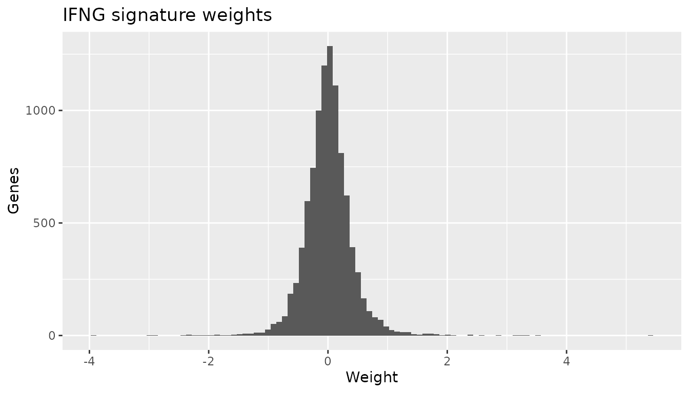
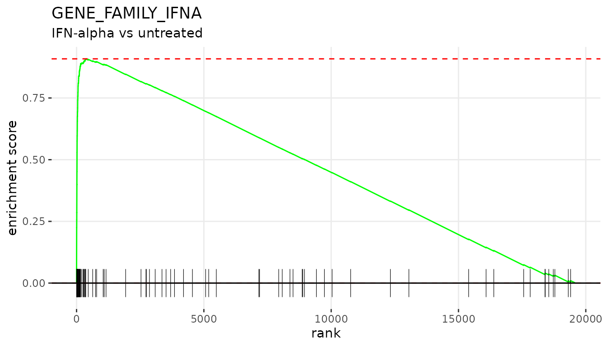
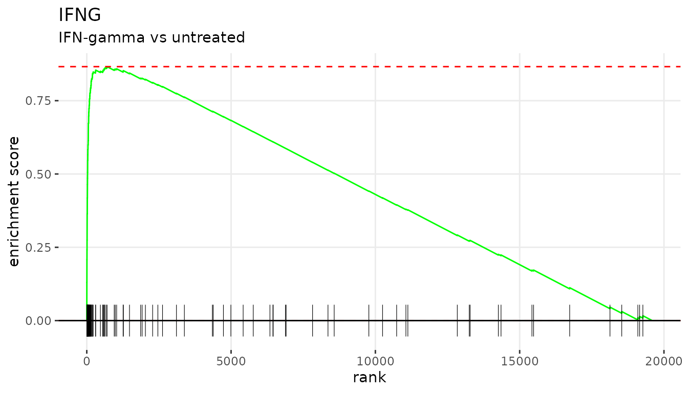

Enrichment analysis with perturbation signatures
Source:vignettes/pertsig-tutorial.Rmd
pertsig-tutorial.Rmdpertsig provides perturbation signatures: per-gene
logistic regression weights that describe the transcriptional response
to a perturbation (a drug, a cytokine, a gene knockout and so on).
getGeneSets() turns each signature into gene sets of its
top-weighted genes, which can be tested against a differential
expression (DE) profile with fgsea.
Loading signatures
Signatures are available for human ("hsa") and mouse
("mmu"). The file is downloaded once and cached. Rows can
be named by gene symbol or Entrez ID; here we use gene symbols to match
the microarray annotation below.
signatures <- loadSignatures("hsa", geneId = "symbol")
dim(signatures)
#> [1] 9733 165
head(colnames(signatures), 10)
#> [1] "12_O_TETRADECANOYLPHORBOL_13_ACETATE"
#> [2] "17_BETA_ESTRADIOL"
#> [3] "1_25_DIHYDROXYVITAMIN_D3"
#> [4] "2_3_7_8_TETRACHLORODIBENZO_P_DIOXIN"
#> [5] "2_DEOXY_D_GLUCOSE"
#> [6] "4_HYDROXYTAMOXIFEN"
#> [7] "4_THIOURIDINE"
#> [8] "5_AZA_2_DEOXYCYTIDINE"
#> [9] "5_AZACYTIDINE"
#> [10] "5_FLUOROURACIL"Each column is one perturbation. Weights are signed: positive weights mark genes that go up after the perturbation and negative weights mark genes that go down.
ggplot(data.frame(weight = signatures[, "IFNG"]), aes(weight)) +
geom_histogram(bins = 100) +
labs(title = "IFNG signature weights", x = "Weight", y = "Genes")
The top 50 genes of the IFNG signature:
getGeneSets(signatures, topK = 50)[["IFNG"]]
#> [1] "IRF1" "GBP1" "WARS1" "APOL6" "GBP4" "CD74"
#> [7] "SOCS3" "TAP1" "PLAAT4" "STAT1" "IDO1" "C1S"
#> [13] "CYP24A1" "GBP5" "UBE2L6" "C1R" "GBP3" "SBNO2"
#> [19] "PARP14" "PLGRKT" "TAP2" "PSMB10" "HLA-E" "APOL3"
#> [25] "CD274" "PSMB8" "SERPINB1" "CXCL9" "GBP2" "HAPLN3"
#> [31] "APOL2" "CSF1" "IL32" "ETV5" "LAP3" "ICAM1"
#> [37] "SERPING1" "LGALS3BP" "PSAT1" "IL18BP" "TGM2" "SECTM1"
#> [43] "PCK2" "PIM1" "TAPBP" "PSMB9" "TWF1" "PSME2"
#> [49] "VAMP5" "NLRC5"Example dataset
GSE41291 is a microarray time course of the HSG cell line, untreated or treated with IFN-alpha or IFN-gamma, in triplicate. We use the 4-hour samples and make two DE comparisons: IFN-alpha vs untreated and IFN-gamma vs untreated.
Differential expression
condition <- factor(gse4hr$condition, levels = c("untreated", "IFNalpha", "IFNgamma"))
design <- model.matrix(~ 0 + condition)
colnames(design) <- levels(condition)
contrasts <- makeContrasts(IFNalpha = IFNalpha - untreated,
IFNgamma = IFNgamma - untreated,
levels = design)
fit <- lmFit(gse4hr, design)
fit <- eBayes(contrasts.fit(fit, contrasts))fgsea needs one statistic per gene. We use the limma t-statistic, drop probes without a unique gene symbol and keep the most highly expressed probe of each gene:
getRanks <- function(fit, contrast) {
de <- as.data.table(topTable(fit, coef = contrast, number = Inf))
de <- de[!is.na(Gene.symbol) & Gene.symbol != "" &
!grepl("///", Gene.symbol, fixed = TRUE)]
de <- de[order(-AveExpr)][!duplicated(Gene.symbol)]
setNames(de$t, de$Gene.symbol)
}
ranks <- list(IFNalpha = getRanks(fit, "IFNalpha"),
IFNgamma = getRanks(fit, "IFNgamma"))
lengths(ranks)
#> IFNalpha IFNgamma
#> 19593 19593Making gene sets
getGeneSets() takes the topK genes with the
largest weights in each signature, which are the genes that go up after
the perturbation. Use direction = "down" for the genes that
go down, or direction = "both" for both (_UP
and _DN sets). Passing the genes of the DE profile as
universe picks the top genes among those that fgsea can
use, so every gene set keeps topK genes. Both comparisons
come from the same arrays, so they share one gene universe.
geneSets <- getGeneSets(signatures, topK = 100, universe = names(ranks$IFNalpha))
length(geneSets)
#> [1] 165A positive NES means the DE profile goes the same way as the perturbation; a negative NES means it goes the opposite way.
Running fgsea
set.seed(42)
fgseaRes <- lapply(ranks, function(stats) {
fgsea(pathways = geneSets, stats = stats)
})
plotTopSignatures <- function(fgseaRes, stats) {
topUp <- fgseaRes[ES > 0][head(order(pval), n = 10), pathway]
topDown <- fgseaRes[ES < 0][head(order(pval), n = 10), pathway]
plotGseaTable(geneSets[c(topUp, rev(topDown))], stats, fgseaRes, gseaParam = 0.5)
}IFN-alpha vs untreated
head(fgseaRes$IFNalpha[order(pval)], 10)
#> pathway pval padj log2err
#> <char> <num> <num> <num>
#> 1: GENE_FAMILY_IFNA 3.850920e-45 6.354017e-43 1.7506503
#> 2: IFNG 1.116002e-27 9.207015e-26 1.3651796
#> 3: IL6 5.782674e-22 3.180471e-20 1.2125446
#> 4: SARS_COV_2 6.863142e-20 2.831046e-18 1.1512205
#> 5: STING1 6.556916e-17 2.163782e-15 1.0574636
#> 6: ZIKA_VIRUS 8.418028e-16 2.314958e-14 1.0276699
#> 7: IL22 1.247337e-15 2.940151e-14 1.0175448
#> 8: MITF 5.509383e-14 1.010054e-12 0.9653278
#> 9: POLYINOSINIC_POLYCYTIDYLIC_ACID 5.509383e-14 1.010054e-12 0.9653278
#> 10: HEPATITIS_C_VIRUS_INFECTION 1.338418e-12 2.208390e-11 0.9101197
#> ES NES size leadingEdge
#> <num> <num> <int> <list>
#> 1: 0.9086312 3.650279 100 IRF9,IFIT3,IFIT1,IFIT2,HELZ2,IFI16,...[51]
#> 2: 0.8376970 3.365313 100 IRF9,SERPINB1,TGM2,STAT1,PARP9,UBE2L6,...[46]
#> 3: 0.8010650 3.218149 100 IRF9,IFI16,SERPINB1,TGM2,PARP9,PLSCR1,...[40]
#> 4: 0.7806835 3.136270 100 IFIT3,IFIT1,IFIT2,HELZ2,IFI16,ISG15,...[35]
#> 5: 0.7491926 3.009760 100 IFIT3,IFIT2,OASL,IFI44,ISG15,TGM2,...[27]
#> 6: 0.7366120 2.959220 100 IFIT3,IFIT1,IFIT2,HELZ2,OASL,ISG15,...[23]
#> 7: 0.7347480 2.951731 100 HELZ2,SERPINB1,IRF7,TGM2,SOCS2,SECTM1,...[46]
#> 8: 0.7134086 2.866004 100 IFIT3,IFIT1,HELZ2,TRIM21,OAS2,IFI6,...[20]
#> 9: 0.7133904 2.865931 100 IFIT3,IFIT1,IFIT2,HELZ2,OASL,IFI44,...[24]
#> 10: 0.6936794 2.786745 100 OASL,IFI44,ISG15,IFI44L,STAT1,IFI6,...[17]
plotTopSignatures(fgseaRes$IFNalpha, ranks$IFNalpha)
plotEnrichment(geneSets[["GENE_FAMILY_IFNA"]], ranks$IFNalpha) +
labs(title = "GENE_FAMILY_IFNA", subtitle = "IFN-alpha vs untreated")
IFN-gamma vs untreated
head(fgseaRes$IFNgamma[order(pval)], 10)
#> pathway pval padj log2err ES
#> <char> <num> <num> <num> <num>
#> 1: IFNG 3.068876e-38 5.063645e-36 1.6088796 0.8661303
#> 2: GENE_FAMILY_IFNA 1.811776e-22 1.494715e-20 1.2295041 0.7750994
#> 3: IL6 1.481316e-21 8.147238e-20 1.2039752 0.7686371
#> 4: IL21 3.618890e-14 1.492792e-12 0.9653278 0.6893531
#> 5: IL3 2.093198e-10 6.907553e-09 0.8266573 0.6304140
#> 6: TNF 3.715776e-10 1.021838e-08 0.8140358 0.6262948
#> 7: IL22 3.158096e-09 7.444082e-08 0.7749390 0.6056923
#> 8: EGF 1.112219e-07 2.293952e-06 0.7049757 0.5699742
#> 9: SARS_COV_2 3.957977e-07 7.256291e-06 0.6749629 0.5545557
#> 10: ANTIRETROVIRAL_THERAPY 5.353384e-07 8.833083e-06 0.6594444 0.5505014
#> NES size leadingEdge
#> <num> <int> <list>
#> 1: 3.605913 100 IRF9,CXCL10,IRF1,TGM2,IL18BP,STAT1,...[54]
#> 2: 3.226929 100 IRF9,HEG1,STAT1,TRIM21,PARP9,UBE2L6,...[42]
#> 3: 3.200025 100 IRF9,TGM2,PARP9,GBP2,SECTM1,CCL2,...[38]
#> 4: 2.869946 100 IRF9,CXCL10,IRF1,HEG1,PARP9,GBP2,...[31]
#> 5: 2.624568 100 IRF9,PARP9,CCL2,PLSCR1,SOCS1,CISH,...[33]
#> 6: 2.607419 100 UBD,CXCL10,IRF1,GBP1,CCL2,TAP1,...[21]
#> 7: 2.521646 100 TGM2,SECTM1,HELZ2,CISH,SBNO2,SERPINB1,...[33]
#> 8: 2.372943 100 IRF9,IRF1,TRIB1,CXCL2,LDLR,TNFRSF1A,...[25]
#> 9: 2.308752 100 IFIT3,IFI16,HELZ2,IFIT2,CXCL2,SP110,...[34]
#> 10: 2.291873 100 PARP9,TAP1,HLA-E,HAPLN3,SOCS1,BATF2,...[22]
plotTopSignatures(fgseaRes$IFNgamma, ranks$IFNgamma)
plotEnrichment(geneSets[["IFNG"]], ranks$IFNgamma) +
labs(title = "IFNG", subtitle = "IFN-gamma vs untreated")
Mouse signatures
Mouse signatures are loaded the same way. The top 50 genes of the IFNG signature:
mouseSignatures <- loadSignatures("mmu", geneId = "symbol")
dim(mouseSignatures)
#> [1] 9624 266
getGeneSets(mouseSignatures, topK = 50)[["IFNG"]]
#> [1] "Gbp2" "Ly6a" "Igtp" "Hspa1b" "Iigp1" "Cd74" "Cyp2b10"
#> [8] "Irf1" "Psmb8" "Gbp7" "Blvrb" "H2-DMa" "Tap1" "Socs1"
#> [15] "Ephx1" "Stat1" "Mt2" "Irf8" "Me1" "Tgtp1" "Psmb9"
#> [22] "Gbp6" "Irgm1" "Irgm2" "H2-Aa" "Ifi47" "Gbp4" "Slc7a11"
#> [29] "Gbp8" "Tap2" "Ly6c1" "Cyp1a1" "H2-Ab1" "Bach2" "Tapbp"
#> [36] "Zbp1" "Gbp3" "H2-K1" "Jun" "Bcl2" "Cxcl10" "Insl6"
#> [43] "Cd274" "Psmb10" "Abcc4" "Cxcl9" "Abhd2" "Uchl1" "H2-D1"
#> [50] "Ggct"Session info
sessionInfo()
#> R version 4.6.2 (2026-10-29)
#> Platform: x86_64-pc-linux-gnu
#> Running under: Ubuntu 24.04.5 LTS
#>
#> Matrix products: default
#> BLAS: /usr/lib/x86_64-linux-gnu/openblas-pthread/libblas.so.3
#> LAPACK: /usr/lib/x86_64-linux-gnu/openblas-pthread/libopenblasp-r0.3.26.so; LAPACK version 3.12.0
#>
#> locale:
#> [1] LC_CTYPE=C.UTF-8 LC_NUMERIC=C LC_TIME=C.UTF-8
#> [4] LC_COLLATE=C.UTF-8 LC_MONETARY=C.UTF-8 LC_MESSAGES=C.UTF-8
#> [7] LC_PAPER=C.UTF-8 LC_NAME=C LC_ADDRESS=C
#> [10] LC_TELEPHONE=C LC_MEASUREMENT=C.UTF-8 LC_IDENTIFICATION=C
#>
#> time zone: UTC
#> tzcode source: system (glibc)
#>
#> attached base packages:
#> [1] stats graphics grDevices utils datasets methods base
#>
#> other attached packages:
#> [1] ggplot2_4.0.3 data.table_1.18.6.1 limma_3.68.5
#> [4] GEOquery_2.80.1 Biobase_2.72.0 BiocGenerics_0.58.1
#> [7] generics_0.1.4 fgsea_1.38.0 pertsig_0.1.0
#>
#> loaded via a namespace (and not attached):
#> [1] SummarizedExperiment_1.42.0 fastmatch_1.1-8
#> [3] gtable_0.3.6 httr2_1.3.0
#> [5] xfun_0.62 bslib_0.12.0
#> [7] lattice_0.23-1 tzdb_0.5.0
#> [9] vctrs_0.7.3 tools_4.6.2
#> [11] curl_8.1.0 stats4_4.6.2
#> [13] parallel_4.6.2 tibble_3.3.1
#> [15] R.oo_1.27.1 pkgconfig_2.0.3
#> [17] Matrix_1.7-6 rentrez_1.2.4
#> [19] RColorBrewer_1.1-3 S7_0.2.2
#> [21] desc_1.4.3 S4Vectors_0.50.3
#> [23] lifecycle_1.0.5 compiler_4.6.2
#> [25] farver_2.1.2 textshaping_1.0.5
#> [27] statmod_1.5.2 Seqinfo_1.2.0
#> [29] codetools_0.2-20 htmltools_0.5.9
#> [31] sass_0.4.10 yaml_2.3.12
#> [33] tidyr_1.3.2 pillar_1.11.1
#> [35] pkgdown_2.2.1 jquerylib_0.1.4
#> [37] R.utils_2.13.0 BiocParallel_1.46.0
#> [39] cachem_1.1.0 DelayedArray_0.38.2
#> [41] abind_1.4-8 tidyselect_1.2.1
#> [43] digest_0.6.39 purrr_1.2.2
#> [45] dplyr_1.2.1 labeling_0.4.3
#> [47] cowplot_1.2.0 fastmap_1.2.0
#> [49] grid_4.6.2 cli_3.6.6
#> [51] SparseArray_1.12.3 magrittr_2.0.5
#> [53] S4Arrays_1.12.1 XML_3.99-0.25
#> [55] withr_3.0.3 readr_2.2.0
#> [57] scales_1.4.0 rmarkdown_2.32
#> [59] XVector_0.52.0 matrixStats_1.5.0
#> [61] otel_0.2.0 R.methodsS3_1.8.2
#> [63] hms_1.1.4 ragg_1.5.2
#> [65] evaluate_1.0.5 knitr_1.52
#> [67] GenomicRanges_1.64.0 IRanges_2.46.0
#> [69] rlang_1.3.0 Rcpp_1.1.2
#> [71] glue_1.8.1 xml2_1.6.0
#> [73] jsonlite_2.0.0 R6_2.6.1
#> [75] MatrixGenerics_1.24.0 systemfonts_1.3.2
#> [77] fs_2.1.0